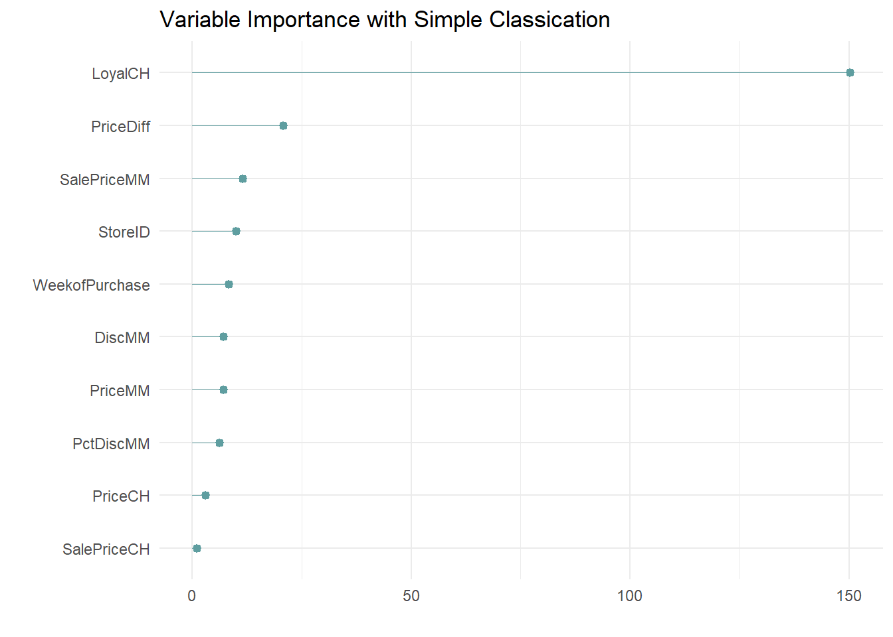
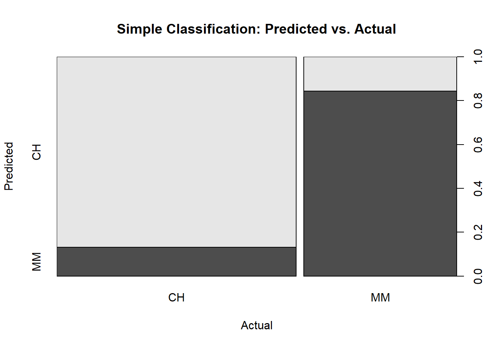
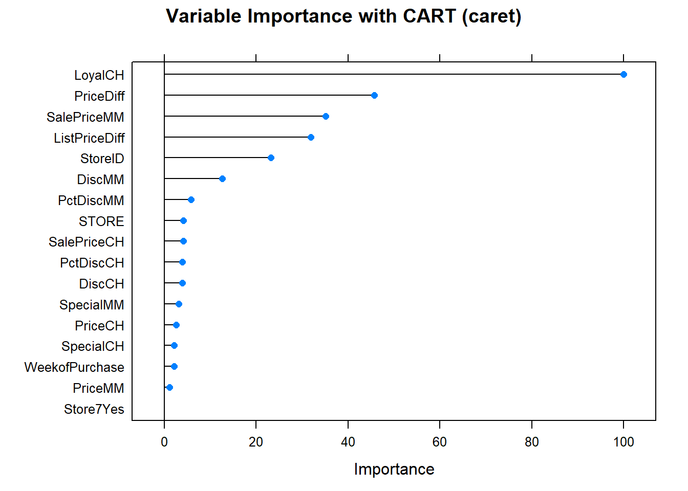

8.1 Classification Tree
You don’t usually build a simple classification tree on its own, but it is a good way to build understanding, and the ensemble models build on the logic. I’ll learn by example, using the ISLR::OJ data set to predict which brand of orange juice, Citrus Hill (CH) or Minute Maid = (MM), customers Purchase from its 17 predictor variables.
library(tidyverse)
library(caret)
library(rpart) # classification and regression trees
library(rpart.plot) # better formatted plots than the ones in rpart
oj_dat <- ISLR::OJ
skimr::skim(oj_dat)| Name | oj_dat |
| Number of rows | 1070 |
| Number of columns | 18 |
| _______________________ | |
| Column type frequency: | |
| factor | 2 |
| numeric | 16 |
| ________________________ | |
| Group variables | None |
Variable type: factor
| skim_variable | n_missing | complete_rate | ordered | n_unique | top_counts |
|---|---|---|---|---|---|
| Purchase | 0 | 1 | FALSE | 2 | CH: 653, MM: 417 |
| Store7 | 0 | 1 | FALSE | 2 | No: 714, Yes: 356 |
Variable type: numeric
| skim_variable | n_missing | complete_rate | mean | sd | p0 | p25 | p50 | p75 | p100 | hist |
|---|---|---|---|---|---|---|---|---|---|---|
| WeekofPurchase | 0 | 1 | 254.38 | 15.56 | 227.00 | 240.00 | 257.00 | 268.00 | 278.00 | ▆▅▅▇▇ |
| StoreID | 0 | 1 | 3.96 | 2.31 | 1.00 | 2.00 | 3.00 | 7.00 | 7.00 | ▇▅▃▁▇ |
| PriceCH | 0 | 1 | 1.87 | 0.10 | 1.69 | 1.79 | 1.86 | 1.99 | 2.09 | ▅▂▇▆▁ |
| PriceMM | 0 | 1 | 2.09 | 0.13 | 1.69 | 1.99 | 2.09 | 2.18 | 2.29 | ▂▁▃▇▆ |
| DiscCH | 0 | 1 | 0.05 | 0.12 | 0.00 | 0.00 | 0.00 | 0.00 | 0.50 | ▇▁▁▁▁ |
| DiscMM | 0 | 1 | 0.12 | 0.21 | 0.00 | 0.00 | 0.00 | 0.23 | 0.80 | ▇▁▂▁▁ |
| SpecialCH | 0 | 1 | 0.15 | 0.35 | 0.00 | 0.00 | 0.00 | 0.00 | 1.00 | ▇▁▁▁▂ |
| SpecialMM | 0 | 1 | 0.16 | 0.37 | 0.00 | 0.00 | 0.00 | 0.00 | 1.00 | ▇▁▁▁▂ |
| LoyalCH | 0 | 1 | 0.57 | 0.31 | 0.00 | 0.33 | 0.60 | 0.85 | 1.00 | ▅▃▆▆▇ |
| SalePriceMM | 0 | 1 | 1.96 | 0.25 | 1.19 | 1.69 | 2.09 | 2.13 | 2.29 | ▁▂▂▂▇ |
| SalePriceCH | 0 | 1 | 1.82 | 0.14 | 1.39 | 1.75 | 1.86 | 1.89 | 2.09 | ▂▁▇▇▅ |
| PriceDiff | 0 | 1 | 0.15 | 0.27 | -0.67 | 0.00 | 0.23 | 0.32 | 0.64 | ▁▂▃▇▂ |
| PctDiscMM | 0 | 1 | 0.06 | 0.10 | 0.00 | 0.00 | 0.00 | 0.11 | 0.40 | ▇▁▂▁▁ |
| PctDiscCH | 0 | 1 | 0.03 | 0.06 | 0.00 | 0.00 | 0.00 | 0.00 | 0.25 | ▇▁▁▁▁ |
| ListPriceDiff | 0 | 1 | 0.22 | 0.11 | 0.00 | 0.14 | 0.24 | 0.30 | 0.44 | ▂▃▆▇▁ |
| STORE | 0 | 1 | 1.63 | 1.43 | 0.00 | 0.00 | 2.00 | 3.00 | 4.00 | ▇▃▅▅▃ |
I’ll split oj_dat (n = 1,070) into oj_train (80%, n = 857) to fit various models, and oj_test (20%, n = 213) to compare their performance on new data.
set.seed(12345)
partition <- createDataPartition(y = oj_dat$Purchase, p = 0.8, list = FALSE)
oj_train <- oj_dat[partition, ]
oj_test <- oj_dat[-partition, ]Function rpart::rpart() builds a full tree, minimizing the Gini index \(G\) by default (parms = list(split = "gini")), until the stopping criterion is satisfied. The default stopping criterion is
- only attempt a split if the current node has at least
minsplit = 20observations, and - only accept a split if
- the resulting nodes have at least
minbucket = round(minsplit/3)observations, and - the resulting overall fit improves by
cp = 0.01(i.e., \(\Delta G <= 0.01\)).
- the resulting nodes have at least
# Use method = "class" for classification, method = "anova" for regression
set.seed(123)
oj_mdl_cart_full <- rpart(formula = Purchase ~ ., data = oj_train, method = "class")
print(oj_mdl_cart_full)## n= 857
##
## node), split, n, loss, yval, (yprob)
## * denotes terminal node
##
## 1) root 857 330 CH (0.610 0.390)
## 2) LoyalCH>=0.48 537 94 CH (0.825 0.175)
## 4) LoyalCH>=0.76 271 13 CH (0.952 0.048) *
## 5) LoyalCH< 0.76 266 81 CH (0.695 0.305)
## 10) PriceDiff>=-0.16 226 50 CH (0.779 0.221) *
## 11) PriceDiff< -0.16 40 9 MM (0.225 0.775) *
## 3) LoyalCH< 0.48 320 80 MM (0.250 0.750)
## 6) LoyalCH>=0.28 146 58 MM (0.397 0.603)
## 12) SalePriceMM>=2 71 31 CH (0.563 0.437) *
## 13) SalePriceMM< 2 75 18 MM (0.240 0.760) *
## 7) LoyalCH< 0.28 174 22 MM (0.126 0.874) *The output starts with the root node. The predicted class at the root is CH and this prediction produces 334 errors on the 857 observations for a success rate (accuracy) of 61% (0.61026838) and an error rate of 39% (0.38973162). The child nodes of node “x” are labeled 2x) and 2x+1), so the child nodes of 1) are 2) and 3), and the child nodes of 2) are 4) and 5). Terminal nodes are labeled with an asterisk (*).
Surprisingly, only 3 of the 17 features were used the in full tree: LoyalCH (Customer brand loyalty for CH), PriceDiff (relative price of MM over CH), and SalePriceMM (absolute price of MM). The first split is at LoyalCH = 0.48285. Here is a diagram of the full (unpruned) tree.

The boxes show the node classification (based on mode), the proportion of observations that are not CH, and the proportion of observations included in the node.
rpart() not only grew the full tree, it identified the set of cost complexity parameters, and measured the model performance of each corresponding tree using cross-validation. printcp() displays the candidate \(c_p\) values. You can use this table to decide how to prune the tree.
##
## Classification tree:
## rpart(formula = Purchase ~ ., data = oj_train, method = "class")
##
## Variables actually used in tree construction:
## [1] LoyalCH PriceDiff SalePriceMM
##
## Root node error: 334/857 = 0
##
## n= 857
##
## CP nsplit rel error xerror xstd
## 1 0 0 1 1 0
## 2 0 1 1 1 0
## 3 0 3 0 0 0
## 4 0 5 0 0 0There are 4 \(c_p\) values in this model. The model with the smallest complexity parameter allows the most splits (nsplit). The highest complexity parameter corresponds to a tree with just a root node. rel error is the error rate relative to the root node. The root node absolute error is 0.38973162 (the proportion of MM), so its rel error is 0.38973162/0.38973162 = 1.0. That means the absolute error of the full tree (at CP = 0.01) is 0.42814 * 0.38973162 = 0.1669. You can verify that by calculating the error rate of the predicted values:
data.frame(pred = predict(oj_mdl_cart_full, newdata = oj_train, type = "class")) %>%
mutate(obs = oj_train$Purchase,
err = if_else(pred != obs, 1, 0)) %>%
summarize(mean_err = mean(err))## mean_err
## 1 0.17Finishing the CP table tour, xerror is the relative cross-validated error rate and xstd is its standard error. If you want the lowest possible error, then prune to the tree with the smallest relative CV error, \(c_p\) = 0.01. If you want to balance predictive power with simplicity, prune to the smallest tree within 1 SE of the one with the smallest relative error. The CP table is not super-helpful for finding that tree, so add a column to find it.
oj_mdl_cart_full$cptable %>%
data.frame() %>%
mutate(
min_idx = which.min(oj_mdl_cart_full$cptable[, "xerror"]),
rownum = row_number(),
xerror_cap = oj_mdl_cart_full$cptable[min_idx, "xerror"] +
oj_mdl_cart_full$cptable[min_idx, "xstd"],
eval = case_when(rownum == min_idx ~ "min xerror",
xerror < xerror_cap ~ "under cap",
TRUE ~ "")
) %>%
select(-rownum, -min_idx) ## CP nsplit rel.error xerror xstd xerror_cap eval
## 1 0.479 0 1.00 1.00 0.043 0.5
## 2 0.033 1 0.52 0.54 0.036 0.5
## 3 0.013 3 0.46 0.47 0.034 0.5 under cap
## 4 0.010 5 0.43 0.46 0.034 0.5 min xerrorThe simplest tree using the 1-SE rule is $c_p = 0.01347305, CV error = 0.18). Fortunately, plotcp() presents a nice graphical representation of the relationship between xerror and cp.

The dashed line is set at the minimum xerror + xstd. The top axis shows the number of splits in the tree. I’m not sure why the CP values are not the same as in the table (they are close, but not the same). The figure suggests I should prune to 5 or 3 splits. I see this curve never really hits a minimum - it is still decreasing at 5 splits. The default tuning parameter value cp = 0.01 may be too large, so I’ll set it to cp = 0.001 and start over.
set.seed(123)
oj_mdl_cart_full <- rpart(
formula = Purchase ~ .,
data = oj_train,
method = "class",
cp = 0.001
)
print(oj_mdl_cart_full)## n= 857
##
## node), split, n, loss, yval, (yprob)
## * denotes terminal node
##
## 1) root 857 330 CH (0.610 0.390)
## 2) LoyalCH>=0.48 537 94 CH (0.825 0.175)
## 4) LoyalCH>=0.76 271 13 CH (0.952 0.048) *
## 5) LoyalCH< 0.76 266 81 CH (0.695 0.305)
## 10) PriceDiff>=-0.16 226 50 CH (0.779 0.221)
## 20) ListPriceDiff>=0.26 115 11 CH (0.904 0.096) *
## 21) ListPriceDiff< 0.26 111 39 CH (0.649 0.351)
## 42) PriceMM>=2.2 19 2 CH (0.895 0.105) *
## 43) PriceMM< 2.2 92 37 CH (0.598 0.402)
## 86) DiscCH>=0.12 7 0 CH (1.000 0.000) *
## 87) DiscCH< 0.12 85 37 CH (0.565 0.435)
## 174) ListPriceDiff>=0.22 45 15 CH (0.667 0.333) *
## 175) ListPriceDiff< 0.22 40 18 MM (0.450 0.550)
## 350) LoyalCH>=0.53 28 13 CH (0.536 0.464)
## 700) WeekofPurchase< 2.7e+02 21 8 CH (0.619 0.381) *
## 701) WeekofPurchase>=2.7e+02 7 2 MM (0.286 0.714) *
## 351) LoyalCH< 0.53 12 3 MM (0.250 0.750) *
## 11) PriceDiff< -0.16 40 9 MM (0.225 0.775) *
## 3) LoyalCH< 0.48 320 80 MM (0.250 0.750)
## 6) LoyalCH>=0.28 146 58 MM (0.397 0.603)
## 12) SalePriceMM>=2 71 31 CH (0.563 0.437)
## 24) LoyalCH< 0.3 7 0 CH (1.000 0.000) *
## 25) LoyalCH>=0.3 64 31 CH (0.516 0.484)
## 50) WeekofPurchase>=2.5e+02 52 22 CH (0.577 0.423)
## 100) PriceCH< 1.9 35 11 CH (0.686 0.314)
## 200) StoreID< 1.5 9 1 CH (0.889 0.111) *
## 201) StoreID>=1.5 26 10 CH (0.615 0.385)
## 402) LoyalCH< 0.41 17 4 CH (0.765 0.235) *
## 403) LoyalCH>=0.41 9 3 MM (0.333 0.667) *
## 101) PriceCH>=1.9 17 6 MM (0.353 0.647) *
## 51) WeekofPurchase< 2.5e+02 12 3 MM (0.250 0.750) *
## 13) SalePriceMM< 2 75 18 MM (0.240 0.760)
## 26) SpecialCH>=0.5 14 6 CH (0.571 0.429) *
## 27) SpecialCH< 0.5 61 10 MM (0.164 0.836) *
## 7) LoyalCH< 0.28 174 22 MM (0.126 0.874)
## 14) LoyalCH>=0.035 117 21 MM (0.179 0.821)
## 28) WeekofPurchase< 2.7e+02 104 21 MM (0.202 0.798)
## 56) PriceCH>=1.9 20 9 MM (0.450 0.550)
## 112) WeekofPurchase>=2.5e+02 12 5 CH (0.583 0.417) *
## 113) WeekofPurchase< 2.5e+02 8 2 MM (0.250 0.750) *
## 57) PriceCH< 1.9 84 12 MM (0.143 0.857) *
## 29) WeekofPurchase>=2.7e+02 13 0 MM (0.000 1.000) *
## 15) LoyalCH< 0.035 57 1 MM (0.018 0.982) *This is a much larger tree. Did I find a cp value that produces a local min?

Yes, the min is at CP = 0.011 with 5 splits. The min + 1 SE is at CP = 0.021 with 3 splits. I’ll prune the tree to 3 splits.
oj_mdl_cart <- prune(
oj_mdl_cart_full,
cp = oj_mdl_cart_full$cptable[oj_mdl_cart_full$cptable[, 2] == 3, "CP"]
)
rpart.plot(oj_mdl_cart, yesno = TRUE)
The most “important” indicator of Purchase appears to be LoyalCH. From the rpart vignette (page 12),
“An overall measure of variable importance is the sum of the goodness of split measures for each split for which it was the primary variable, plus goodness (adjusted agreement) for all splits in which it was a surrogate.”
Surrogates refer to alternative features for a node to handle missing data. For each split, CART evaluates a variety of alternative “surrogate” splits to use when the feature value for the primary split is NA. Surrogate splits are splits that produce results similar to the original split.
A variable’s importance is the sum of the improvement in the overall Gini (or RMSE) measure produced by the nodes in which it appears. Here is the variable importance for this model.
oj_mdl_cart$variable.importance %>%
data.frame() %>%
rownames_to_column(var = "Feature") %>%
rename(Overall = '.') %>%
ggplot(aes(x = fct_reorder(Feature, Overall), y = Overall)) +
geom_pointrange(aes(ymin = 0, ymax = Overall), color = "cadetblue", size = .3) +
theme_minimal() +
coord_flip() +
labs(x = "", y = "", title = "Variable Importance with Simple Classication")
LoyalCH is by far the most important variable, as expected from its position at the top of the tree, and one level down.
You can see how the surrogates appear in the model with the summary() function.
## Call:
## rpart(formula = Purchase ~ ., data = oj_train, method = "class",
## cp = 0.001)
## n= 857
##
## CP nsplit rel error xerror xstd
## 1 0.479 0 1.00 1.00 0.043
## 2 0.033 1 0.52 0.54 0.036
## 3 0.013 3 0.46 0.47 0.034
##
## Variable importance
## LoyalCH PriceDiff SalePriceMM StoreID WeekofPurchase
## 67 9 5 4 4
## DiscMM PriceMM PctDiscMM PriceCH
## 3 3 3 1
##
## Node number 1: 857 observations, complexity param=0.48
## predicted class=CH expected loss=0.39 P(node) =1
## class counts: 523 334
## probabilities: 0.610 0.390
## left son=2 (537 obs) right son=3 (320 obs)
## Primary splits:
## LoyalCH < 0.48 to the right, improve=130, (0 missing)
## StoreID < 3.5 to the right, improve= 40, (0 missing)
## PriceDiff < 0.015 to the right, improve= 24, (0 missing)
## ListPriceDiff < 0.26 to the right, improve= 23, (0 missing)
## SalePriceMM < 1.8 to the right, improve= 20, (0 missing)
## Surrogate splits:
## StoreID < 3.5 to the right, agree=0.65, adj=0.053, (0 split)
## PriceMM < 1.9 to the right, agree=0.64, adj=0.031, (0 split)
## WeekofPurchase < 230 to the right, agree=0.63, adj=0.016, (0 split)
## DiscMM < 0.77 to the left, agree=0.63, adj=0.006, (0 split)
## SalePriceMM < 1.4 to the right, agree=0.63, adj=0.006, (0 split)
##
## Node number 2: 537 observations, complexity param=0.033
## predicted class=CH expected loss=0.18 P(node) =0.63
## class counts: 443 94
## probabilities: 0.825 0.175
## left son=4 (271 obs) right son=5 (266 obs)
## Primary splits:
## LoyalCH < 0.76 to the right, improve=18.0, (0 missing)
## PriceDiff < 0.015 to the right, improve=15.0, (0 missing)
## SalePriceMM < 1.8 to the right, improve=14.0, (0 missing)
## ListPriceDiff < 0.26 to the right, improve=11.0, (0 missing)
## DiscMM < 0.15 to the left, improve= 7.8, (0 missing)
## Surrogate splits:
## WeekofPurchase < 260 to the right, agree=0.59, adj=0.18, (0 split)
## PriceCH < 1.8 to the right, agree=0.59, adj=0.17, (0 split)
## StoreID < 3.5 to the right, agree=0.59, adj=0.16, (0 split)
## PriceMM < 2 to the right, agree=0.59, adj=0.16, (0 split)
## SalePriceMM < 2 to the right, agree=0.59, adj=0.16, (0 split)
##
## Node number 3: 320 observations
## predicted class=MM expected loss=0.25 P(node) =0.37
## class counts: 80 240
## probabilities: 0.250 0.750
##
## Node number 4: 271 observations
## predicted class=CH expected loss=0.048 P(node) =0.32
## class counts: 258 13
## probabilities: 0.952 0.048
##
## Node number 5: 266 observations, complexity param=0.033
## predicted class=CH expected loss=0.3 P(node) =0.31
## class counts: 185 81
## probabilities: 0.695 0.305
## left son=10 (226 obs) right son=11 (40 obs)
## Primary splits:
## PriceDiff < -0.16 to the right, improve=21, (0 missing)
## ListPriceDiff < 0.24 to the right, improve=21, (0 missing)
## SalePriceMM < 1.8 to the right, improve=17, (0 missing)
## DiscMM < 0.15 to the left, improve=10, (0 missing)
## PctDiscMM < 0.073 to the left, improve=10, (0 missing)
## Surrogate splits:
## SalePriceMM < 1.6 to the right, agree=0.91, adj=0.38, (0 split)
## DiscMM < 0.57 to the left, agree=0.90, adj=0.30, (0 split)
## PctDiscMM < 0.26 to the left, agree=0.90, adj=0.30, (0 split)
## WeekofPurchase < 270 to the left, agree=0.87, adj=0.15, (0 split)
## SalePriceCH < 2.1 to the left, agree=0.86, adj=0.05, (0 split)
##
## Node number 10: 226 observations
## predicted class=CH expected loss=0.22 P(node) =0.26
## class counts: 176 50
## probabilities: 0.779 0.221
##
## Node number 11: 40 observations
## predicted class=MM expected loss=0.22 P(node) =0.047
## class counts: 9 31
## probabilities: 0.225 0.775I’ll evaluate the predictions and record the accuracy (correct classification percentage) for comparison to other models. Two ways to evaluate the model are the confusion matrix, and the ROC curve.
8.1.1 Measuring Performance
8.1.1.1 Confusion Matrix
Print the confusion matrix with caret::confusionMatrix() to see how well does this model performs against the holdout set.
oj_preds_cart <- bind_cols(
predict(oj_mdl_cart, newdata = oj_test, type = "prob"),
predicted = predict(oj_mdl_cart, newdata = oj_test, type = "class"),
actual = oj_test$Purchase
)
oj_cm_cart <- confusionMatrix(oj_preds_cart$predicted, reference = oj_preds_cart$actual)
oj_cm_cart## Confusion Matrix and Statistics
##
## Reference
## Prediction CH MM
## CH 113 13
## MM 17 70
##
## Accuracy : 0.859
## 95% CI : (0.805, 0.903)
## No Information Rate : 0.61
## P-Value [Acc > NIR] : 0.00000000000000126
##
## Kappa : 0.706
##
## Mcnemar's Test P-Value : 0.584
##
## Sensitivity : 0.869
## Specificity : 0.843
## Pos Pred Value : 0.897
## Neg Pred Value : 0.805
## Prevalence : 0.610
## Detection Rate : 0.531
## Detection Prevalence : 0.592
## Balanced Accuracy : 0.856
##
## 'Positive' Class : CH
## The confusion matrix is at the top. It also includes a lot of statistics. It’s worth getting familiar with the stats. The model accuracy and 95% CI are calculated from the binomial test.
##
## Exact binomial test
##
## data: 113 + 70 and 213
## number of successes = 183, number of trials = 213, p-value
## <0.0000000000000002
## alternative hypothesis: true probability of success is not equal to 0.5
## 95 percent confidence interval:
## 0.81 0.90
## sample estimates:
## probability of success
## 0.86The “No Information Rate” (NIR) statistic is the class rate for the largest class. In this case CH is the largest class, so NIR = 130/213 = 0.6103. “P-Value [Acc > NIR]” is the binomial test that the model accuracy is significantly better than the NIR (i.e., significantly better than just always guessing CH).
##
## Exact binomial test
##
## data: 113 + 70 and 213
## number of successes = 183, number of trials = 213, p-value =
## 0.000000000000001
## alternative hypothesis: true probability of success is greater than 0.61
## 95 percent confidence interval:
## 0.81 1.00
## sample estimates:
## probability of success
## 0.86The “Accuracy” statistic indicates the model predicts 0.8590 of the observations correctly. That’s good, but less impressive when you consider the prevalence of CH is 0.6103 - you could achieve 61% accuracy just by predicting CH every time. A measure that controls for the prevalence is Cohen’s kappa statistic. The kappa statistic is explained here. It compares the accuracy to the accuracy of a “random system”. It is defined as
\[\kappa = \frac{Acc - RA}{1-RA}\]
where
\[RA = \frac{ActFalse \times PredFalse + ActTrue \times PredTrue}{Total \times Total}\]
is the hypothetical probability of a chance agreement. ActFalse will be the number of “MM” (13 + 70 = 83) and actual true will be the number of “CH” (113 + 17 = 130). The predicted counts are
##
## CH MM
## 126 87So, \(RA = (83*87 + 130*126) / 213^2 = 0.5202\) and \(\kappa = (0.8592 - 0.5202)/(1 - 0.5202) = 0.7064\). The kappa statistic varies from 0 to 1 where 0 means accurate predictions occur merely by chance, and 1 means the predictions are in perfect agreement with the observations. In this case, a kappa statistic of 0.7064 is “substantial”. See chart here.
The other measures from the confusionMatrix() output are various proportions and you can remind yourself of their definitions in the documentation with ?confusionMatrix.
Visuals are almost always helpful. Here is a plot of the confusion matrix.
plot(oj_preds_cart$actual, oj_preds_cart$predicted,
main = "Simple Classification: Predicted vs. Actual",
xlab = "Actual",
ylab = "Predicted")
8.1.1.2 ROC Curve
The ROC (receiver operating characteristics) curve (Fawcett 2005) is another measure of accuracy. The ROC curve is a plot of the true positive rate (TPR, sensitivity) versus the false positive rate (FPR, 1 - specificity) for a set of thresholds. By default, the threshold for predicting the default classification is 0.50, but it could be any threshold. precrec::evalmod() calculates the confusion matrix values from the model using the holdout data set. The AUC on the holdout set is 0.8848. pRoc::plot.roc(), plotROC::geom_roc(), and yardstick::roc_curve() are all options for plotting a ROC curve.
mdl_auc <- Metrics::auc(actual = oj_preds_cart$actual == "CH", oj_preds_cart$CH)
yardstick::roc_curve(oj_preds_cart, actual, CH) %>%
autoplot() +
labs(
title = "OJ CART ROC Curve",
subtitle = paste0("AUC = ", round(mdl_auc, 4))
)A few points on the ROC space are helpful for understanding how to use it.
- The lower left point (0, 0) is the result of always predicting “negative” or in this case “MM” if “CH” is taken as the default class. No false positives, but no true positives either.
- The upper right point (1, 1) is the result of always predicting “positive” (“CH” here). You catch all true positives, but miss all the true negatives.
- The upper left point (0, 1) is the result of perfect accuracy.
- The lower right point (1, 0) is the result of perfect imbecility. You made the exact wrong prediction every time.
- The 45 degree diagonal is the result of randomly guessing positive (CH) X percent of the time. If you guess positive 90% of the time and the prevalence is 50%, your TPR will be 90% and your FPR will also be 90%, etc.
The goal is for all nodes to bunch up in the upper left.
Points to the left of the diagonal with a low TPR can be thought of as “conservative” predictors - they only make positive (CH) predictions with strong evidence. Points to the left of the diagonal with a high TPR can be thought of as “liberal” predictors - they make positive (CH) predictions with weak evidence.
8.1.1.3 Gain Curve
The gain curve plots the cumulative summed true outcome versus the fraction of items seen when sorted by the predicted value. The “wizard” curve is the gain curve when the data is sorted by the true outcome. If the model’s gain curve is close to the wizard curve, then the model predicted the response variable well. The gray area is the “gain” over a random prediction.
130 of the 213 consumers in the holdout set purchased CH.
The gain curve encountered 77 CH purchasers (59%) within the first 79 observations (37%).
It encountered all 130 CH purchasers on the 213th observation (100%).
The bottom of the gray area is the outcome of a random model. Only half the CH purchasers would be observed within 50% of the observations. The top of the gray area is the outcome of the perfect model, the “wizard curve”. Half the CH purchasers would be observed in 65/213=31% of the observations.
yardstick::gain_curve(oj_preds_cart, actual, CH) %>%
autoplot() +
labs(
title = "OJ CART Gain Curve"
)
8.1.2 Training with Caret
I can also fit the model with caret::train(). There are two ways to tune hyperparameters in train():
- set the number of tuning parameter values to consider by setting
tuneLength, or - set particular values to consider for each parameter by defining a
tuneGrid.
I’ll build the model using 10-fold cross-validation to optimize the hyperparameter CP. If you have no idea what is the optimal tuning parameter, start with tuneLength to get close, then fine-tune with tuneGrid. That’s what I’ll do. I’ll create a training control object that I can re-use in other model builds.
oj_trControl = trainControl(
method = "cv",
number = 10,
savePredictions = "final", # save preds for the optimal tuning parameter
classProbs = TRUE, # class probs in addition to preds
summaryFunction = twoClassSummary
)Now fit the model.
set.seed(1234)
oj_mdl_cart2 <- train(
Purchase ~ .,
data = oj_train,
method = "rpart",
tuneLength = 5,
metric = "ROC",
trControl = oj_trControl
)caret built a full tree using rpart’s default parameters: gini splitting index, at least 20 observations in a node in order to consider splitting it, and at least 6 observations in each node. Caret then calculated the accuracy for each candidate value of \(\alpha\). Here is the results.
## CART
##
## 857 samples
## 17 predictor
## 2 classes: 'CH', 'MM'
##
## No pre-processing
## Resampling: Cross-Validated (10 fold)
## Summary of sample sizes: 772, 772, 771, 770, 771, 771, ...
## Resampling results across tuning parameters:
##
## cp ROC Sens Spec
## 0.006 0.85 0.86 0.73
## 0.009 0.85 0.86 0.73
## 0.013 0.85 0.85 0.74
## 0.033 0.78 0.85 0.68
## 0.479 0.59 0.92 0.26
##
## ROC was used to select the optimal model using the largest value.
## The final value used for the model was cp = 0.006.The second cp (0.008982036) produced the highest accuracy. I can drill into the best value of cp using a tuning grid.
set.seed(1234)
oj_mdl_cart2 <- train(
Purchase ~ .,
data = oj_train,
method = "rpart",
tuneGrid = expand.grid(cp = seq(from = 0.001, to = 0.010, length = 11)),
metric = "ROC",
trControl = oj_trControl
)
print(oj_mdl_cart2)## CART
##
## 857 samples
## 17 predictor
## 2 classes: 'CH', 'MM'
##
## No pre-processing
## Resampling: Cross-Validated (10 fold)
## Summary of sample sizes: 772, 772, 771, 770, 771, 771, ...
## Resampling results across tuning parameters:
##
## cp ROC Sens Spec
## 0.0010 0.85 0.85 0.72
## 0.0019 0.85 0.85 0.72
## 0.0028 0.85 0.85 0.73
## 0.0037 0.85 0.85 0.74
## 0.0046 0.85 0.85 0.73
## 0.0055 0.85 0.86 0.73
## 0.0064 0.85 0.86 0.73
## 0.0073 0.85 0.86 0.73
## 0.0082 0.85 0.86 0.73
## 0.0091 0.85 0.86 0.73
## 0.0100 0.85 0.85 0.74
##
## ROC was used to select the optimal model using the largest value.
## The final value used for the model was cp = 0.0055.The best model is at cp = 0.0082. Here are the cross-validated accuracies for the candidate cp values.
Here are the rules in the final model.
## n= 857
##
## node), split, n, loss, yval, (yprob)
## * denotes terminal node
##
## 1) root 857 330 CH (0.610 0.390)
## 2) LoyalCH>=0.48 537 94 CH (0.825 0.175)
## 4) LoyalCH>=0.76 271 13 CH (0.952 0.048) *
## 5) LoyalCH< 0.76 266 81 CH (0.695 0.305)
## 10) PriceDiff>=-0.16 226 50 CH (0.779 0.221) *
## 11) PriceDiff< -0.16 40 9 MM (0.225 0.775) *
## 3) LoyalCH< 0.48 320 80 MM (0.250 0.750)
## 6) LoyalCH>=0.28 146 58 MM (0.397 0.603)
## 12) SalePriceMM>=2 71 31 CH (0.563 0.437)
## 24) LoyalCH< 0.3 7 0 CH (1.000 0.000) *
## 25) LoyalCH>=0.3 64 31 CH (0.516 0.484)
## 50) WeekofPurchase>=2.5e+02 52 22 CH (0.577 0.423)
## 100) PriceCH< 1.9 35 11 CH (0.686 0.314) *
## 101) PriceCH>=1.9 17 6 MM (0.353 0.647) *
## 51) WeekofPurchase< 2.5e+02 12 3 MM (0.250 0.750) *
## 13) SalePriceMM< 2 75 18 MM (0.240 0.760)
## 26) SpecialCH>=0.5 14 6 CH (0.571 0.429) *
## 27) SpecialCH< 0.5 61 10 MM (0.164 0.836) *
## 7) LoyalCH< 0.28 174 22 MM (0.126 0.874) *
Let’s look at the performance on the holdout data set.
oj_preds_cart2 <- bind_cols(
predict(oj_mdl_cart2, newdata = oj_test, type = "prob"),
Predicted = predict(oj_mdl_cart2, newdata = oj_test, type = "raw"),
Actual = oj_test$Purchase
)
oj_cm_cart2 <- confusionMatrix(oj_preds_cart2$Predicted, oj_preds_cart2$Actual)
oj_cm_cart2## Confusion Matrix and Statistics
##
## Reference
## Prediction CH MM
## CH 117 18
## MM 13 65
##
## Accuracy : 0.854
## 95% CI : (0.8, 0.899)
## No Information Rate : 0.61
## P-Value [Acc > NIR] : 0.00000000000000483
##
## Kappa : 0.691
##
## Mcnemar's Test P-Value : 0.472
##
## Sensitivity : 0.900
## Specificity : 0.783
## Pos Pred Value : 0.867
## Neg Pred Value : 0.833
## Prevalence : 0.610
## Detection Rate : 0.549
## Detection Prevalence : 0.634
## Balanced Accuracy : 0.842
##
## 'Positive' Class : CH
## The accuracy is 0.8451 - a little worse than the 0.8592 from the direct method. The AUC is 0.9102.
mdl_auc <- Metrics::auc(actual = oj_preds_cart2$Actual == "CH", oj_preds_cart2$CH)
yardstick::roc_curve(oj_preds_cart2, Actual, CH) %>%
autoplot() +
labs(
title = "OJ CART ROC Curve (caret)",
subtitle = paste0("AUC = ", round(mdl_auc, 4))
)yardstick::gain_curve(oj_preds_cart2, Actual, CH) %>%
autoplot() +
labs(title = "OJ CART Gain Curve (caret)")
Finally, here is the variable importance plot. Brand loyalty is most important, followed by price difference.

Looks like the manual effort fared best. Here is a summary the accuracy rates of the two models.
oj_scoreboard <- rbind(
data.frame(Model = "Single Tree", Accuracy = oj_cm_cart$overall["Accuracy"]),
data.frame(Model = "Single Tree (caret)", Accuracy = oj_cm_cart2$overall["Accuracy"])
) %>% arrange(desc(Accuracy))
scoreboard(oj_scoreboard)Model | Accuracy |
Single Tree | 0.8592 |
Single Tree (caret) | 0.8545 |
References
Fawcett, Tom. 2005. An Introduction to Roc Analysis. ELSEVIER. https://ccrma.stanford.edu/workshops/mir2009/references/ROCintro.pdf.